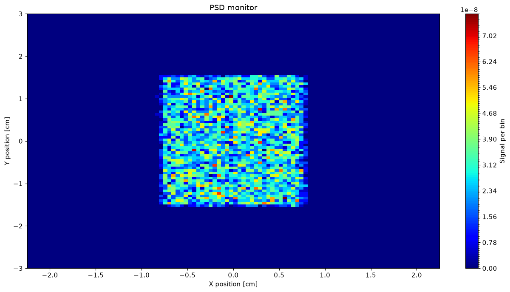
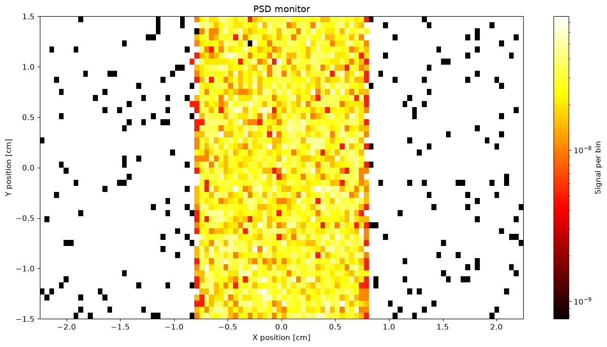
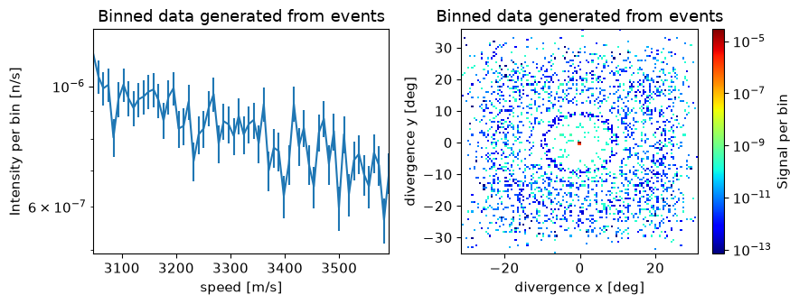

Data#
Data from simulations performed by McStasScript is returned as McStasData objects. This section will explore what these contain and how one can manipulate them. First a small instrument is written that will supply data to investigate.
Example instrument#
The instrument will consist of a source, a powder sample and some monitors that will record data.
Example monitors#
Here three monitors are defined, a 2D PSD monitor, a 1D banana monitor and an event monitor. Monitor_nD is used for the last two, where the option string describes the geometry and what is to be recorded.
banana = instrument.add_component("banana", "Monitor_nD", RELATIVE=sample)
banana.set_parameters(xwidth=1.5, yheight=0.4, restore_neutron=1, filename='"banana.dat"')
banana.options = '"theta limits=[5 175] bins=250, banana"'
event = instrument.add_component("events", "Monitor_nD")
event.set_AT(0.1, RELATIVE=sample)
event.set_parameters(xwidth=0.1, yheight=0.1, restore_neutron=1, filename='"events.dat"')
event.options = '"list all auto, x y z vx vy vz t"'
mon = instrument.add_component("PSD", "PSD_monitor")
mon.set_AT(0.1, RELATIVE=sample)
mon.set_parameters(nx=100, ny=100, filename='"psd.dat"',
xwidth=3*sample.radius, yheight=2*sample.yheight, restore_neutron=1)
Generating data#
The simulation is executed using the backengine method with a low number of neutrons. The data is returned by the backengine method, but will contain None if the simulation failed.
instrument.settings(ncount=1E5, output_path="data_example")
data = instrument.backengine()
INFO: Using directory: "/home/runner/work/McStasScript/McStasScript/docs/source/user_guide/data_example"
INFO: Regenerating c-file: data_example.c
CFLAGS= @NCRYSTALFLAGS@
WARNING:
The parameter format of sample is initialized
using a static {,,,} vector.
-> Such static vectors support literal numbers ONLY.
-> Any vector use of variables or defines must happen via a
DECLARE/INITIALIZE pointer.
-----------------------------------------------------------
Generating single GPU kernel or single CPU section layout:
-----------------------------------------------------------
Generating GPU/CPU -DFUNNEL layout:
-----------------------------------------------------------
INFO: Recompiling: ./data_example.out
lto-wrapper: warning: using serial compilation of 3 LTRANS jobs
lto-wrapper: note: see the '-flto' option documentation for more information
/home/runner/micromamba/envs/mcstasscript-docs/bin/x86_64-conda-linux-gnu-ld: /tmp/ccnt3reQ.ltrans1.ltrans.o: in function `read_line_data.constprop.0':
/home/runner/work/McStasScript/McStasScript/docs/source/user_guide/./data_example.c:10259:(.text.read_line_data.constprop.0+0xea): warning: the use of `tmpnam' is dangerous, better use `mkstemp'
INFO: ===
Opening input file '/home/runner/micromamba/envs/mcstasscript-docs/share/mcstas/resources/data/Na2Ca3Al2F14.laz' (Table_Read_Offset)
Table from file 'Na2Ca3Al2F14.laz' (block 1) is 841 x 18 (x=1:20), constant step. interpolation: linear
'# TITLE *-Na2Ca3Al2F14-[I213] Courbion, G.;Ferey, G.[1988] Standard NAC cal ...'
PowderN: sample: Reading 841 rows from Na2Ca3Al2F14.laz
PowderN: sample: Powder file probably of type Lazy Pulver (laz)
WARNING: but F2 unit is set to barns=0 (fm^2). Intensity might be 100 times too low.
PowderN: sample: Read 841 reflections from file 'Na2Ca3Al2F14.laz'
PowderN: sample: Vc=1079.1 [Angs] sigma_abs=11.7856 [barn] sigma_inc=13.6704 [barn] reflections=Na2Ca3Al2F14.laz
*** TRACE end ***
Detector: banana_I=2.4037e-07 banana_ERR=6.38134e-09 banana_N=10677 "banana.dat"
Events: "events_dat_list.p.x.y.z.vx.vy.vz.t"
Detector: PSD_I=4.99531e-05 PSD_ERR=5.03558e-07 PSD_N=10430 "psd.dat"
PowderN: sample: Info: you may highly improve the computation efficiency by using
SPLIT 504 COMPONENT sample=PowderN(...)
in the instrument description data_example.instr.
INFO: Placing instr file copy data_example.instr in dataset /home/runner/work/McStasScript/McStasScript/docs/source/user_guide/data_example
INFO: Placing generated c-code copy data_example.c in dataset /home/runner/work/McStasScript/McStasScript/docs/source/user_guide/data_example
print(data)
[
McStasData: banana type: 1D I:2.4037e-07 E:6.38134e-09 N:10677.0,
McStasDataEvent: events with 12378 events. Variables: p x y z vx vy vz t,
McStasData: PSD type: 2D I:4.99531e-05 E:5.03558e-07 N:10430.0]
McStasData objects#
The data retrieved from the instrument object is in the form of a list that contains McStasDataBinned and McStasDataEvent objects. McStasScript contains a function called name_search which can be used to select a certain element of such a data list. It will match the component name first and if no match is found it will check for match with the filename. Here name_search is used to retrieve the PSD McStasDataBinned object.
PSD = ms.name_search("PSD", data)
banana = ms.name_search("banana", data)
events = ms.name_search("events", data)
Accessing metadata#
Both McStasDataBinned and McStasDataEvent object carries relevant metadata in a metadata attribute. Using the python print function this object can display basic information on the contained data.
print(PSD.metadata)
print(banana.metadata)
print(events.metadata)
metadata object
component_name: PSD
filename: psd.dat
2D data of dimension (100, 100)
[-2.25: 2.25] X position [cm]
[-3.0: 3.0] Y position [cm]
Signal per bin
Instrument parameters:
wavelength = 1.2
metadata object
component_name: banana
filename: banana.dat
1D data of length 250
[5.0: 175.0] Longitude [deg]
Intensity [n/s/bin]
Instrument parameters:
wavelength = 1.2
metadata object
component_name: events
filename: events_dat_list.p.x.y.z.vx.vy.vz.t
2D data of dimension (8, 12378)
[1.0: 12378.0] List of neutron events
[1.0: 8.0] p x y z vx vy vz t
Signal per bin
Instrument parameters:
wavelength = 1.2
The metadata object has attributes which can be accessed as well. The info attribute is a dict with the raw metadata read from the file.
component_name
dimension
filename
limits
parameters
info
PSD.metadata.info
{'Date': 'Fri Jul 24 14:05:46 2026 (1784901946)',
'type': 'array_2d(100, 100)',
'Source': 'data_example (data_example.instr)',
'component': 'PSD',
'position': '0 0 5.1',
'title': 'PSD monitor',
'Ncount': '100000',
'filename': 'psd.dat',
'statistics': 'X0=0.00283386; dX=0.44532; Y0=-0.0111665; dY=0.888299;',
'signal': 'Min=0; Max=7.63456e-08; Mean=4.99531e-09;',
'values': '4.99531e-05 5.03558e-07 10430',
'xvar': 'X',
'yvar': 'Y',
'xlabel': 'X position [cm]',
'ylabel': 'Y position [cm]',
'zvar': 'I',
'zlabel': 'Signal per bin',
'xylimits': '-2.25 2.25 -3 3',
'variables': 'I I_err N',
'Parameters': {'wavelength': 1.2}}
The total intensity, error or ncount is kept in the values are often of interest, so these are given their own attributes: total_I, total_E and total_N
print(PSD.metadata.total_I)
print(PSD.metadata.total_E)
print(PSD.metadata.total_N)
4.99531e-05
5.03558e-07
10430.0
Accessing the data#
McStasData objects stores the data as Numpy arrays, these can be accessed as attributes.
Intensity: Holds the intensity, sum of all ray weights
Error: Error on intensity
Ncount: Number of rays that reached
print("Intensity")
print(PSD.Intensity)
print("Error")
print(PSD.Error)
print("Ncount")
print(PSD.Ncount)
Intensity
[[7.85320310e-14 0.00000000e+00 0.00000000e+00 ... 0.00000000e+00
0.00000000e+00 0.00000000e+00]
[0.00000000e+00 1.04274631e-11 0.00000000e+00 ... 0.00000000e+00
0.00000000e+00 0.00000000e+00]
[0.00000000e+00 0.00000000e+00 0.00000000e+00 ... 0.00000000e+00
0.00000000e+00 2.62774649e-12]
...
[0.00000000e+00 0.00000000e+00 0.00000000e+00 ... 0.00000000e+00
0.00000000e+00 0.00000000e+00]
[0.00000000e+00 0.00000000e+00 0.00000000e+00 ... 0.00000000e+00
0.00000000e+00 0.00000000e+00]
[0.00000000e+00 0.00000000e+00 0.00000000e+00 ... 0.00000000e+00
1.86169917e-10 0.00000000e+00]]
Error
[[7.85320310e-14 0.00000000e+00 0.00000000e+00 ... 0.00000000e+00
0.00000000e+00 0.00000000e+00]
[0.00000000e+00 1.04274631e-11 0.00000000e+00 ... 0.00000000e+00
0.00000000e+00 0.00000000e+00]
[0.00000000e+00 0.00000000e+00 0.00000000e+00 ... 0.00000000e+00
0.00000000e+00 2.62774649e-12]
...
[0.00000000e+00 0.00000000e+00 0.00000000e+00 ... 0.00000000e+00
0.00000000e+00 0.00000000e+00]
[0.00000000e+00 0.00000000e+00 0.00000000e+00 ... 0.00000000e+00
0.00000000e+00 0.00000000e+00]
[0.00000000e+00 0.00000000e+00 0.00000000e+00 ... 0.00000000e+00
1.86169917e-10 0.00000000e+00]]
Ncount
[[1. 0. 0. ... 0. 0. 0.]
[0. 1. 0. ... 0. 0. 0.]
[0. 0. 0. ... 0. 0. 1.]
...
[0. 0. 0. ... 0. 0. 0.]
[0. 0. 0. ... 0. 0. 0.]
[0. 0. 0. ... 0. 1. 0.]]
The original path to the data is also contained within the McStasData object and can be returned with get_data_location.
PSD.get_data_location()
'/home/runner/work/McStasScript/McStasScript/docs/source/user_guide/data_example'
Event data#
McStasDataEvent objecst stores event data, and for this reason does not have Error or Ncount. The event information is contained in a 2D Numpy array in the Intensity and Events attributes.
print(events)
McStasDataEvent: events with 12378 events. Variables: p x y z vx vy vz t
print("Events", events.Events)
Events [[ 5.06833431e-09 -2.59616418e-03 6.36066071e-03 ... 6.18291395e+00
3.22294696e+03 1.58240271e-03]
[ 5.08845979e-09 -4.57028524e-03 -7.89650845e-03 ... -9.59093408e+00
3.56735144e+03 1.42963206e-03]
[ 5.07088206e-09 -2.28546497e-03 -1.00958265e-02 ... -5.60190673e-03
3.33473025e+03 1.52935909e-03]
...
[ 2.71351725e-12 2.96928499e-02 7.39259964e-03 ... 1.73924674e+02
3.11873582e+03 1.58774486e-03]
[ 2.86248601e-12 -1.19062380e-02 -1.52112875e-02 ... -6.39800464e+02
3.05437254e+03 1.62116311e-03]
[ 5.07863402e-09 -4.58668214e-03 -1.03376881e-02 ... -1.52435608e+01
3.22234925e+03 1.58269623e-03]]
The McStasDataEvent objects have some help functions to work with the contained event data. The first is get_data_column that returns the data for a given axis. The available axis shown in the table below.
Axis string |
Full name |
Unit |
Description |
|---|---|---|---|
t |
time |
s |
Particle time |
x |
x position |
m |
Coordinate x of particle |
y |
y position |
m |
Coordinate y of particle |
z |
z position |
m |
Coordinate z of particle |
vx |
x velocity |
m/s |
Velocity projected onto x |
vy |
y velocity |
m/s |
Velocity projected onto y |
vz |
z velocity |
m/s |
Velocity projected onto z |
p |
weight |
intensity |
Particle weight McStas n/s |
l |
lambda |
AA |
Wavelength |
e |
energy |
meV |
Particle energy |
speed |
speed |
m/s |
Speed (length of velocity vector) |
dx |
x divergence |
deg |
Divergence from z axis along x axis |
dy |
y divergence |
deg |
Divergence from z axis along y axis |
U1 |
User1 |
Userdefined |
User defined flag in Monitor_nD |
U2 |
User2 |
Userdefined |
User defined flag in Monitor_nD |
U3 |
User3 |
Userdefined |
User defined flag in Monitor_nD |
Here we get the wavelength information for each neutron in the event dataset.
events.get_data_column("l")
array([1.22745424, 1.10894571, 1.18631293, ..., 1.23088207, 1.25668002,
1.22767223], shape=(12378,))
It is also possible to produce a McStasDataBinned dataset from a McStasDataEvent dataset by binning along one or two chosen dimensions using make_1d and make_2d. It supports all the same variables as above. For each method it is possible to choose how many bins should be used with the n_bins keyword argument.
speed_1d = events.make_1d("speed", n_bins=60)
divergence_2d = events.make_2d("dx", "dy", n_bins=[120, 120])
print(speed_1d)
print(divergence_2d)
McStasData: events type: 1D I:5.00461762539798e-05 E:5.035719831694299e-07 N:12378
McStasData: events type: 2D I:5.004617625397979e-05 E:5.035719831694308e-07 N:12378.0
Plotting#
McStasData objects contain information on how the data should be plotted, including for example if it should be on a logarithmic axis. This information is contained in the plot_options attribute of a McStasData object. The plotting are described in more detail on the plotting page.
PSD.plot_options
plot_options log: False
colormap: jet
show_colorbar: True
cut_min: 0
cut_max: 1
x_limit_multiplier: 1
y_limit_multiplier: 1
McStasScript can plot a McStasData object directly using for example make_plot.
ms.make_plot(PSD)

The plot_options can be updated with set_plot_options that takes keyword arguments.
PSD.set_plot_options(log=True, top_lim=1.5, bottom_lim=-1.5, colormap="hot", orders_of_mag=2)
ms.make_plot(PSD)

The set_plot_options takes the following keyword arguments. Some will only apply for 2D data, for example orders_of_mag.
Keyword argument |
Type |
Default |
Description |
|---|---|---|---|
log |
bool |
False |
Logarithmic axis for y in 1D or z in 2D |
orders_of_mag |
float |
300 |
Maximum orders of magnitude to plot in 2D |
colormap |
str |
“jet” |
Matplotlib colormap to use |
show_colorbar |
bool |
True |
Show the colorbar |
x_axis_multiplier |
float |
1 |
Multiplier for x axis data |
y_axis_multiplier |
float |
1 |
Multiplier for y axis data |
cut_min |
float |
0 |
Unitless lower limit normalized to data range |
cut_max |
float |
1 |
Unitless upper limit normalized to data range |
left_lim |
float |
Lower limit to plot range of x axis |
|
right_lim |
float |
Upper limit to plot range of x axis |
|
bottom_lim |
float |
Lower limit to plot range of y axis |
|
top_lim |
float |
Upper limit to plot range of y axis |
McStasDataBinned generated from Event files can be plotted in the same manner.
ms.make_sub_plot([speed_1d, divergence_2d], log=True)
